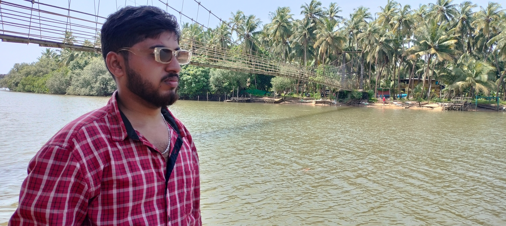
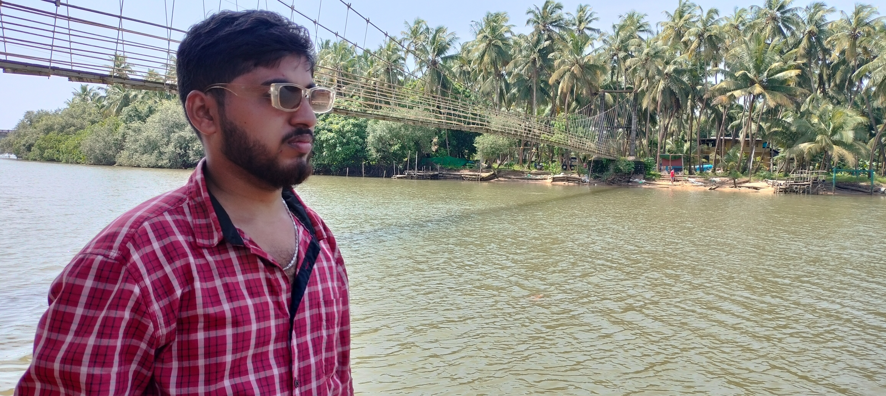

Explore More of the Hanging Bridge
 

The Kemmannu Hanging Bridge, situated near the quaint coastal town of Udupi in Karnataka, is a charming suspension bridge that stretches across the tranquil Suvarna River. This pedestrian-only bridge is a vital lifeline for the local communities, serving as a crucial connection between the village of Kemmannu and nearby settlements. Built with wooden planks suspended by robust steel cables, the bridge is a blend of functionality and simplicity, embodying traditional engineering with a rustic aesthetic.
Surrounded by the lush greenery of coconut groves and the serene backwaters, the bridge is an idyllic retreat for nature lovers and photography enthusiasts. The setting offers visitors a unique opportunity to experience the pristine beauty of coastal Karnataka, with the gentle sway of the bridge adding an element of thrill and adventure. Beyond its practical use, the bridge holds cultural significance, symbolizing the community’s reliance on sustainable and efficient solutions to navigate their environment.
The Kemmannu Hanging Bridge has also become a beloved tourist destination, drawing visitors who seek a peaceful escape from urban life. The area is perfect for a leisurely stroll, capturing scenic photographs, or simply soaking in the calming ambiance of the surroundings. As an emblem of rural life in Karnataka, the bridge represents a harmonious coexistence with nature while highlighting the resourcefulness of local communities.